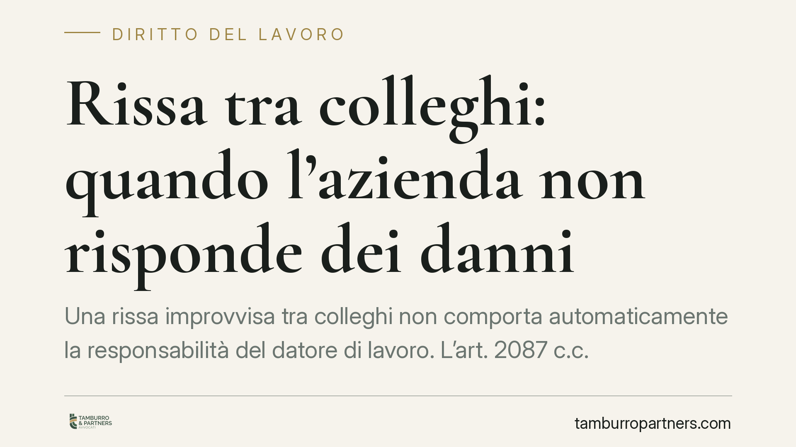

Rissa tra colleghi: quando l'azienda non risponde dei danni
Una rissa improvvisa tra colleghi non comporta automaticamente la responsabilità del datore di lavoro. L'art. 2087 c.c. non configura una garanzia oggettiva: serve un nesso tra l'evento e un'omissione colposa dell'azienda. Il tema torna di attualità nella giurisprudenza di legittimità e merita di essere letto con precisione, senza semplificazioni.

Il fatto
Un dipendente resta ferito durante una rissa scoppiata improvvisamente con alcuni colleghi sul luogo di lavoro. Chiede il risarcimento al datore, invocando la violazione dell'obbligo di sicurezza. La questione, che ricorre con frequenza nel contenzioso giuslavoristico, ruota attorno a un punto: fino a dove arriva la responsabilità dell'azienda per aggressioni tra lavoratori?
L'orientamento della Corte di Cassazione sul punto è consolidato e muove da una premessa tecnica precisa: l'art. 2087 c.c. non introduce una responsabilità automatica a carico del datore.
Inquadramento normativo
L'art. 2087 del Codice civile impone all'imprenditore di adottare "le misure che, secondo la particolarità del lavoro, l'esperienza e la tecnica, sono necessarie a tutelare l'integrità fisica e la personalità morale" dei lavoratori.
È una norma cardine, ma va letta correttamente. Non si tratta di responsabilità oggettiva: il datore non risponde per il solo fatto che un danno si sia verificato in azienda. Occorre dimostrare una condotta colposa – un'omissione, una misura di sicurezza non adottata, un rischio prevedibile e trascurato – e un nesso causale tra quella condotta e l'evento dannoso.
Qui entra in gioco il concetto di prevedibilità. Un litigio che degenera all'improvviso, senza segnali anticipatori, è di norma qualificabile come evento imprevedibile. In quanto tale interrompe il nesso causale con l'organizzazione del lavoro: il datore non poteva impedirlo adottando misure ragionevoli, e la sua responsabilità viene meno.
Resta ferma, su un piano diverso, la copertura dell'assicurazione obbligatoria contro gli infortuni, disciplinata dal D.P.R. 1124/1965 (Testo Unico INAIL) e dal D.Lgs. 38/2000, il cui riconoscimento segue presupposti propri (occasione di lavoro) distinti dalla responsabilità civile del datore.
Implicazioni pratiche
La decisione non è un lasciapassare per le imprese. Il discrimine è la prevedibilità dell'evento.
Se tra i colleghi esistevano tensioni note, segnalate, documentate – conflitti già sfociati in minacce, climi ostili portati all'attenzione dei responsabili – la situazione cambia radicalmente. In quei casi l'aggressione cessa di essere imprevedibile: l'azienda che non interviene, pur sapendo, può rispondere ex art. 2087 c.c. per non aver adottato misure organizzative adeguate.
Il lavoratore aggredito, inoltre, non resta privo di tutela nei confronti dell'aggressore. Chi commette materialmente la violenza risponde a titolo personale per fatto illecito (art. 2043 c.c.), con obbligo di risarcire i danni, oltre alle conseguenze penali. Si tratta di una responsabilità autonoma, che prescinde da quella del datore.
Per l'azienda il messaggio operativo è duplice: l'assenza di responsabilità per fatti genuinamente imprevedibili non esonera dal dovere di monitorare e gestire i conflitti interni di cui si abbia conoscenza.
Cosa fare in concreto
- Documenta ogni segnalazione. Se percepisci tensioni o ricevi lamentele tra lavoratori, metti per iscritto comunicazioni e interventi: la tracciabilità è decisiva per stabilire cosa l'azienda sapeva e quando.
- Intervieni sui conflitti noti. Attiva procedure interne, colloqui, provvedimenti disciplinari o misure organizzative. L'inerzia di fronte a tensioni documentate espone a responsabilità.
- Se sei il lavoratore aggredito, agisci anche contro l'autore materiale. La richiesta di risarcimento verso chi ti ha ferito è autonoma rispetto a quella verso il datore e segue le regole del fatto illecito.
- Verifica la copertura INAIL. Valuta con il medico competente e con un professionista se l'infortunio rientri nei presupposti dell'indennizzo previsto dal Testo Unico (D.P.R. 1124/1965), a prescindere dalla responsabilità civile.
- Conserva prove e testimonianze. Referti, certificati, dichiarazioni dei presenti e documentazione aziendale sono il materiale su cui si decide ogni eventuale giudizio.
In sintesi
L'applicazione dei principi consolidati sull'art. 2087 c.c. conferma un equilibrio: niente responsabilità automatica dell'azienda per eventi imprevedibili, ma piena responsabilità quando il rischio era conosciuto e trascurato. La differenza, in concreto, la fa la documentazione.
Consigliamo di affrontare questi casi con un'analisi puntuale dei fatti, perché la qualificazione dell'evento come prevedibile o meno orienta l'intero esito della vicenda.
---
*Contributo informativo a cura di Tamburro & Partners Avvocati - Avv. Giuseppe Tamburro. Non costituisce parere legale.*
Ogni storia di lavoro ha i suoi tempi.
Se gestisci HR e vuoi un confronto su contenzioso, ispezioni o licenziamenti, scrivi allo studio. Ti rispondiamo entro un giorno lavorativo.